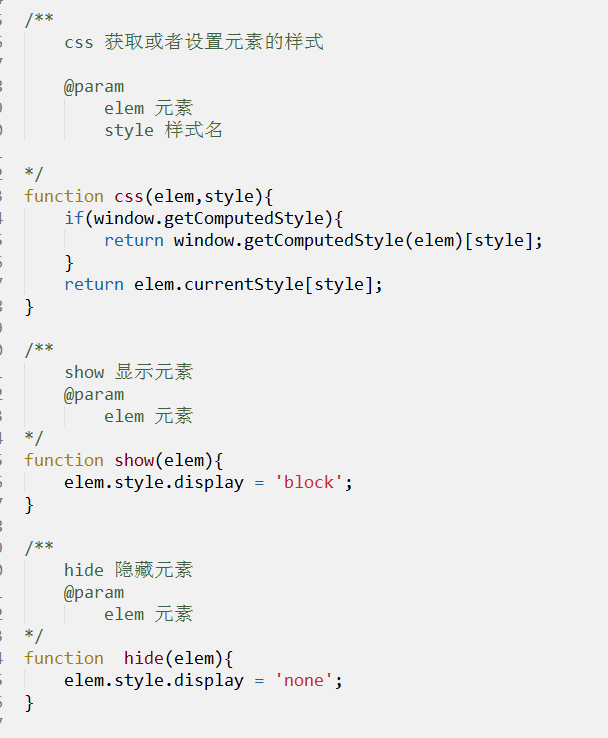

js-DOM下
作者： 千锋李文浩
时间： 17/01/17
补讲
获取时间戳（重）
1、创建时间对象（date.getTime()）(建议使用)
var date = new Date();
var now = date.getTime();
2、使用Date静态方法(ie9+)（测试时使用）
var now = Date.now();
常用的节点属性（回顾）
1、元素.innerHTML 获取或者设置元素的内容
2、表单.value
3、元素.className 获取或者设置元素的class内容
4、元素.style.样式名 设置元素的样式
div.style.font-size //不行
div.style.fontSize = '14px'; //变成驼峰
div.style['font-size'] = '14px'; //使用中括号
var str = 'width';
div.style[str] = '200px';
//arr.0 => arr[0] arr[i]
怎么获取元素的样式值？
元素.style.样式名 只能获取内嵌样式，不能获取文件中或者head声明的样式
元素.currentStyle[样式名]（IE） window.getComputedStyle(元素)[样式名]
div.currentStyle['width'];
window.getComputedStyle(div)['width']
封装css、show、hide方法（重）
1、封装一个方法css，可以设置和获取元素的样式值
1、css(元素,样式名) 代表获取元素的样式值
css(btn,'width') 获取btn的宽度
2、css(元素,样式名,样式值) 代表更改元素的某个样式值
css(btn,'width',200) 改变btn的宽度
2、封装方法show，用于显示某个元素
show(元素) 让元素显示
3、封装方法hide，用于隐藏某个元素
hide(元素) 让元素隐藏

自定义属性（重）
1、什么是自定义属性？
用户自己定义的属性（元素本身没有的）
2、标签中的自定义属性
一般自定义属性使用data-开头
<div data-url="imgs/large.jpg"></div>
3、js中的自定义属性
document.write
var person = {
name: 'pine'
};
div.id div.className
添加自定义属性
div.index
懒加载
1、图片的懒加载
属性操作（重）
0、为什么要进行属性操作？
比如页面中往往需要添加很多自定义属性，那么怎么获取他们呢？
1、获取元素的属性值
如果是元素自带的属性，我们可以通过 元素.属性名(div.className)获取，如果想获取自定义属性呢？
元素.getAttribute(属性名);
2、设置元素的属性值
元素.setAtrribute(属性名,属性值); (IE7+)
3、删除元素的某个属性
元素.removeAtrribute(属性名);
封装attr方法和removeAttr（重）
1、封装attr方法，用于获取和设置元素的属性值

2、封装removeAttr方法，用于删除元素的属性
实战
实现图片的切换

节点属性（重）
1、节点有哪几种？
节点可以分为元素节点、属性节点和文本节点
2、3个非常有用的节点属性（nodeName、 nodeType、 nodeValue ）
nodeName: 节点名称（）
nodeType: 节点类型（判断节点是元素节点还是文本节点或者属性节点）
1 代表元素节点 2 代表属性节点 3 代表文本节点
用途：通常用于判断一个节点是不是元素节点
nodeValue: 获取节点的文本
和innerHTML的区别：nodeValue只能获取和设置文本，innerHTML可以获取和设置元素的内容
<div><span>这是一段文本</span></div>
高级节点属性（重）
childNodes 获取当前元素节点的所有元素及文本子节点
--这里面包含空白文本节点，在IE9之前，IE浏览器会自动忽略空白节点
children 获取元素的所有子元素节点 不包含空白文本节点
firstChild 获取当前元素节点的第一个子节点
firstElementChild 第一个子元素节点
lastChild 获取当前元素节点的最后一个子节点
lastElementChild 最后一个子元素节点
parentNode 获取当前节点的父节点
previousSibling 获取当前节点的前一个同级节点
nextSibling 获取当前节点的后一个同级节点
attributes 获取当前元素节点的所有属性节点集合
封装方法next、prev（常用方法）
dom操作（非常重）
前言：DOM 不单单可以查找节点，也可以创建节点、复制节点、插入节点、删除节点和替换节点
1、document.createElement('标签名') //创建一个元素节点 只有document才能创建
2、document.createTextNode('文本内容') //创建一个文本节点
3、box.appendChild(node) //把node节点插入到box的内部最后的位置
4、box.insertBefore(node, existNode) //把node节点插入到box中已经存在的节点前面
5、box.removeChild(node) 从元素中移除某个子元素
6、hasChildNodes()：判定一个节点是否有子节点
7、cloneNode()：复制空标签 cloneNode(true) 复制整个元素
实战
1、动态表格（学生管理系统-信息录入）
2、弹幕
文档碎片
1、js操作dom时发生了什么？
每次对dom的操作都会触发"重排"，这严重影响到能耗，一般通常采取的做法是尽可能的减少dom操作来减少"重排"
2、什么是文档碎片？
document.createDocumentFragment()
一个容器，用于暂时存放创建的dom元素
3、文档碎片有什么用？
将需要添加的大量元素 先添加到文档碎片 中，再将文档碎片添加到需要插入的位置，大大减少dom操作，提高性能（IE和火狐比较明显）
offsetWidth和offsetHeight（重）
offsetLeft和offsetTop（重）
预习
1、Event事件对象是什么？
2、事件对象中常用属性
e.which e.keyCode
e.clientX e.clientY
e.pageX e.pageY
e.offsetX e.offsetY
3、键盘事件keyDown keyPress keyUp